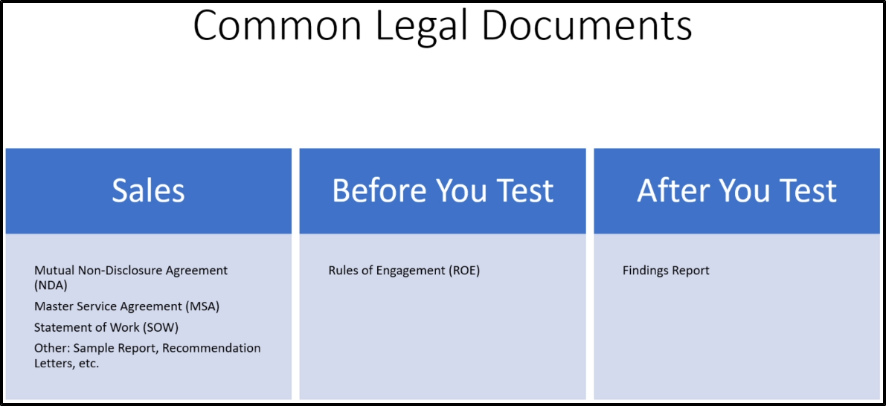

Common Legal Documents
As a pentester, you will probably see only the Before You Test and After You Test
Non-Disclosure Agreement (NDA, can be Mutual):
The document says that you are not able to disclosure what you will find with
other people, the same goes with them if it ise mutual
Some clients can ask you to sign that even for their first talk
Master Service Agreement (MSA) & Statement of Work (SOW):
MSA is going to specify the objectives and responsibilities of both parties
In SOW you will talk about activities, deliverable, timelines, how pay is going to pay etc.
(E.G. "We will do a Wireless Pentent, we are going to take 10 days, we will send you a report
in the end and it will cost 5k money")
The MSA is for multiple contracts, SOW is for a single contract
https://www.rapid7.com/legal/msa/
Sample Report:
Example of a testing report that the client should have
Rules of Engagement (ROE):
It will cover the specifics of the pentesting for the pentester
(E.G. if it is Internal/External, what IPs to test etc)
This is the CYA (Cover Your Ass), it specificaly says what you can attack and what you can't
DISCLAIMER: YOU CAN'T START A PENTESTING IF THIS DOCUMENT IS NOT SIGNED!
Findings Report:
A complete report of what you find, in 2 levels:
1) For the Client, so it is a simple level and understandable (EXECUTIVE SUMMARY)
2) For the other tester, so it is a detailed version of what you found (TECHNICAL SUMMARY)
